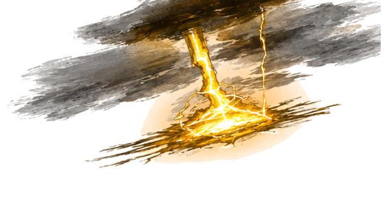
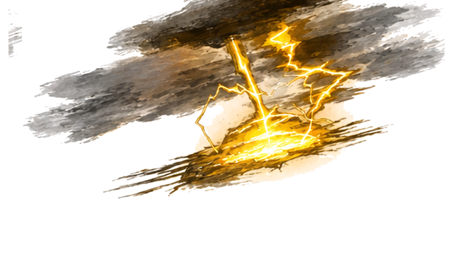
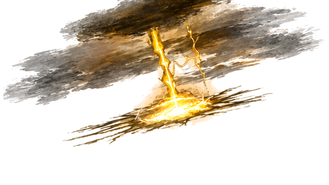
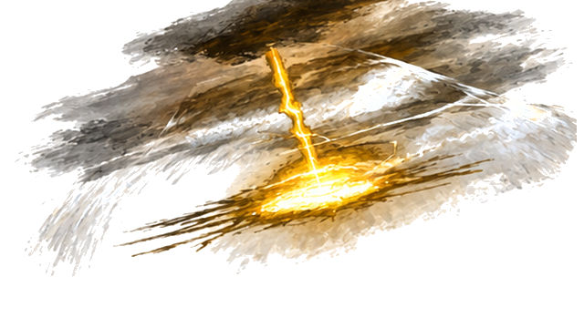
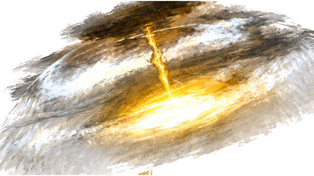
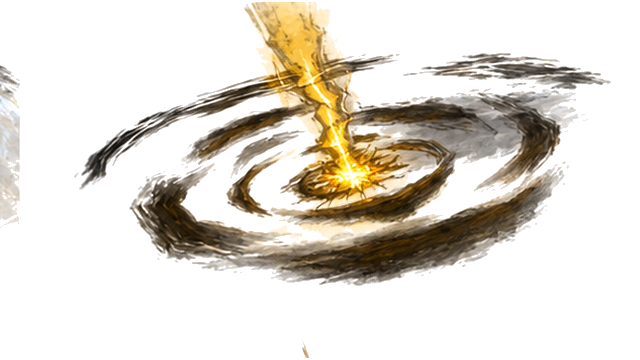
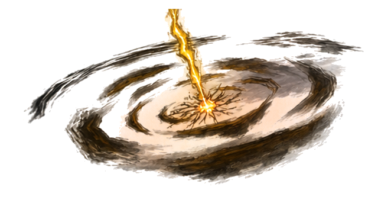
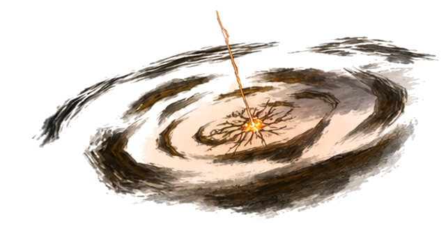

K49 · 原248 · Alpha层级 226

K49 · 原248 · Alpha层级 226

K50 · 原260 · Alpha层级 222

K51 · 原264 · Alpha层级 218

K52 · 原267 · Alpha层级 222

K53 · 原268 · Alpha层级 238

K54 · 原274 · Alpha层级 218

K55 · 原286 · Alpha层级 226

K56 · 原296 · Alpha层级 219